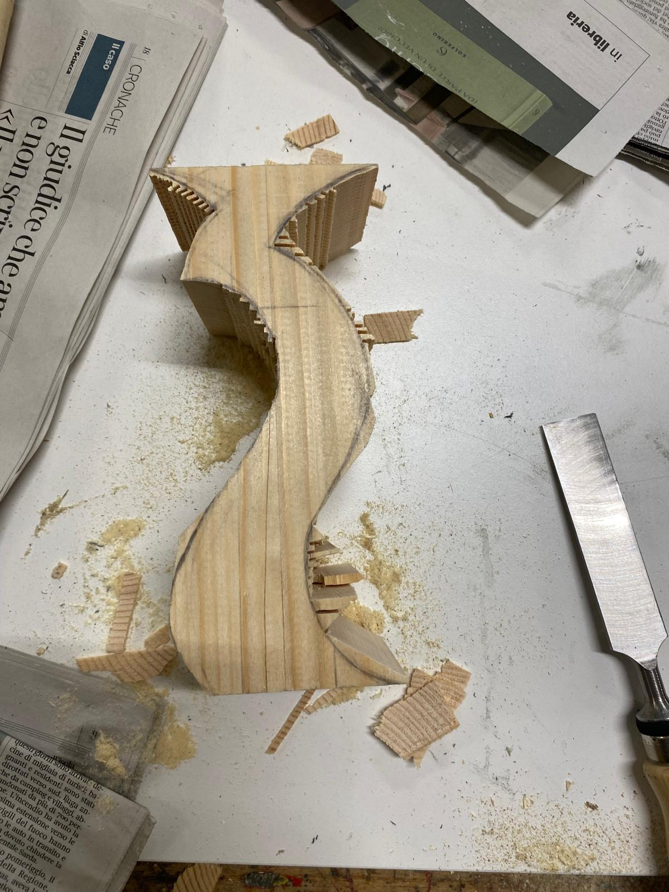
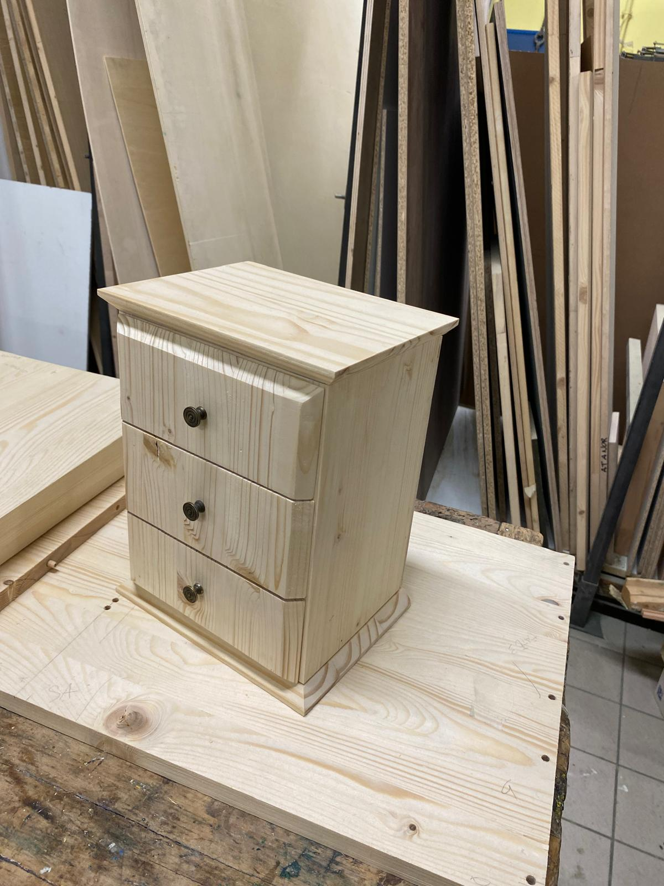

Woodworking projects ×





I spent almost a decade in data analytics — most recently as a CRM & CX analyst for TUI across Portugal and the Netherlands — after degrees in Marketing Analytics (Tilburg University) and Statistics (University of Bologna). It's the kind of background that teaches you to be precise, reliable, and to actually finish what you start.
In 2026 I decided to follow a longer-standing interest and started building things with my hands instead of dashboards. I completed a woodworking course in Bologna, alongside an 800-hour program in Sustainable and Circular Economy that shaped how I think about materials and waste.
I'm now moving to Brussels to take this further, with furniture making as my main focus — though I'm keeping the door open to other directions the craft might take me, from smaller objects to larger commissioned pieces.
I still do some analytics work on the side, so if you need both a reliable pair of hands and a sharp eye for data, either door is open — see my analytics background here.
Craft training
Prior background


More pieces going up here as I build them in Brussels — this section will grow fastest.
Hand-lettered blackboard menus, a service I started for a street food restaurant during Covid and have kept offering to bars and restaurants in the Netherlands and Portugal.
Find below my pages explaining the service and showcasing past work:


A special thanks to my friend Metin who introduced me to this medium.


Below some lettering on blackboard, find more in the blackboard section.


 conversational
conversational Still available for part-time or freelance analytics work — here's what I bring.
Email
lorenzo.taddei@outlook.it
Phone
+39 3333578520
WhatsApp